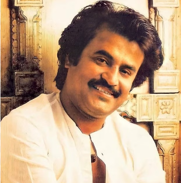

|  Rajini Kanth |
Shivaji Rao Gaikwad (born 12 December 1950), known professionally as Rajinikanth, is an Indian actor who works mainly in Tamil cinema. In a career spanning over five decades, he has done 169 films that includes films in Tamil, Hindi, Telugu, Kannada, Bengali, and Malayalam. He is widely regarded to be one of the most successful and popular actors in the history of Indian cinema.Known for his uniquely styled lines and idiosyncrasies in films, he has a huge fan base internationally and has a cult following. The Government of India honoured him with Padma Bhushan in 2000, Padma Vibhushan in 2016, India's third and second highest civilian honours, and highest award in the field of cinema Dadasaheb Phalke Award in 2019 for his contributions to Indian cinema. |